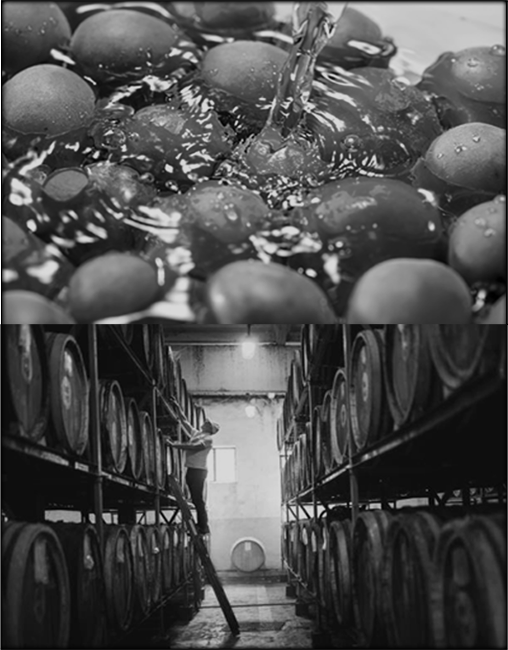
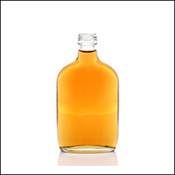
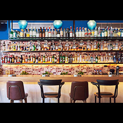

梅酒造りのこだわりABOUT
素材から、熟成まで
厳選された梅を一つずつ手作業で処理しています。
梅を浸けるお酒は、地元で古くから親しまれているウィスキーを梅酒用にアレンジしたものです。
そのため、梅酒を寝かせる樽にはウィスキーの風味がたっぷり染みついています。
洋酒風の梅酒ですので、さまざまなシーンでお楽しみいただけます。

店舗・お取り寄せSHOP
-

公式オンラインショップでは、熟成年数や大きさなど幅広く取り揃えております。
-
梅酒工場近くの「まるまるみちのえき」内アンテナショップでは、ご家庭でも手軽に本格的な梅酒を作れるセットなど販売しております。 試飲も可能ですので、お気軽にお声がけください。
-

東京駅の梅酒専門店にて一部商品販売しております。 店舗内では各梅酒のマリアージュを専門家がご紹介。じっくり商品をお選びいただけます。
ご予約・お問い合わせCOUNTACT
工場見学や商品のことなどお気軽にお問い合わせください。
※工場見学ご希望の方は、事前予約が必要となります。
※お電話でも承ります。
ACCESS
うめの蔵 梅酒工場
〒259-1301
神奈川県秦野市羽根１０７９−５
TEL:
045-XXX-5656
MAIL:
umeshu5656@ume.com
定休日：
年末年始、毎月第1，3土曜日